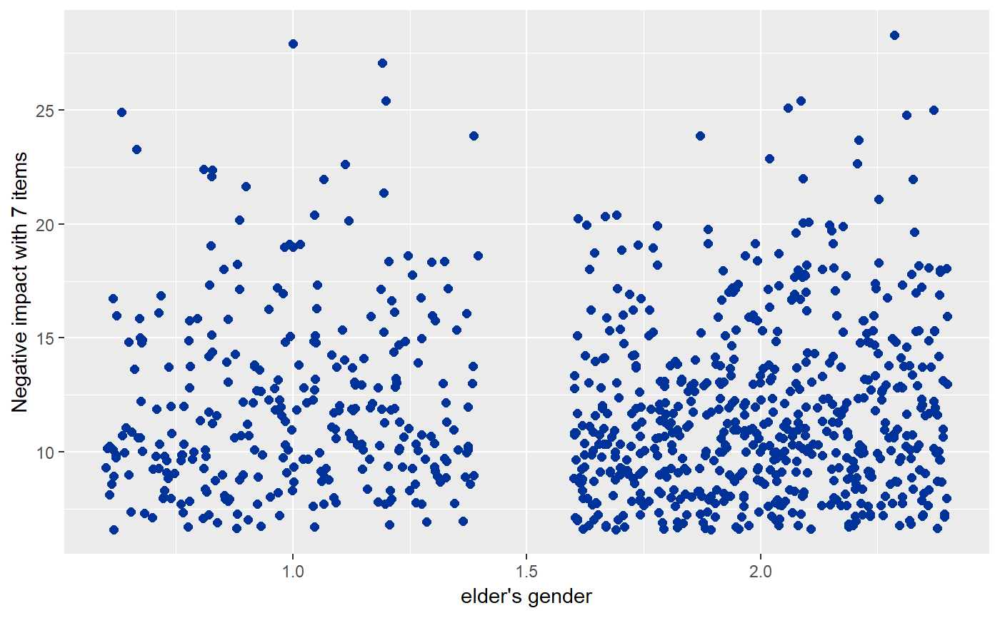
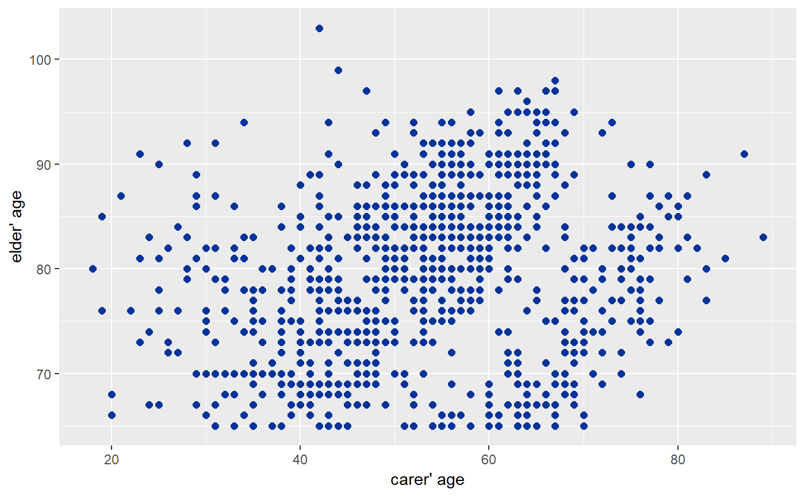
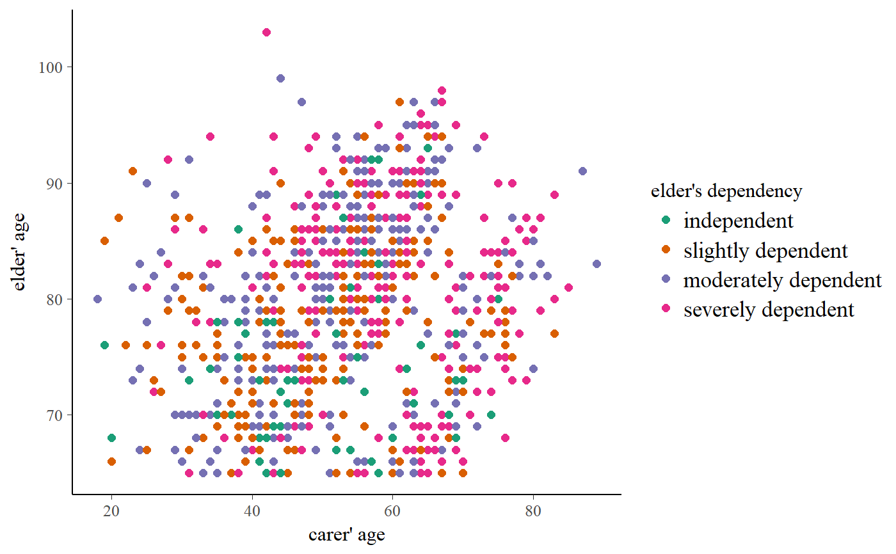
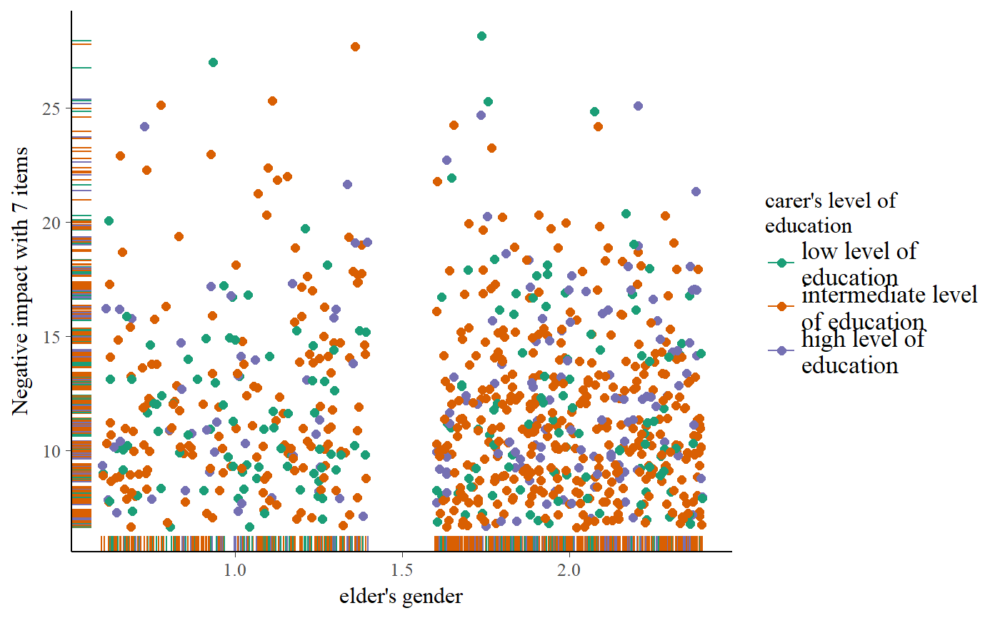
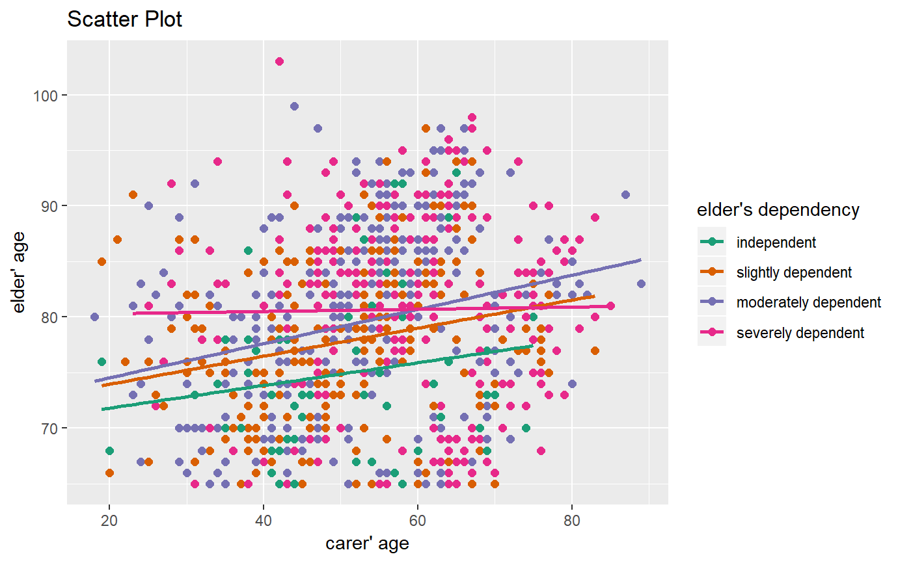
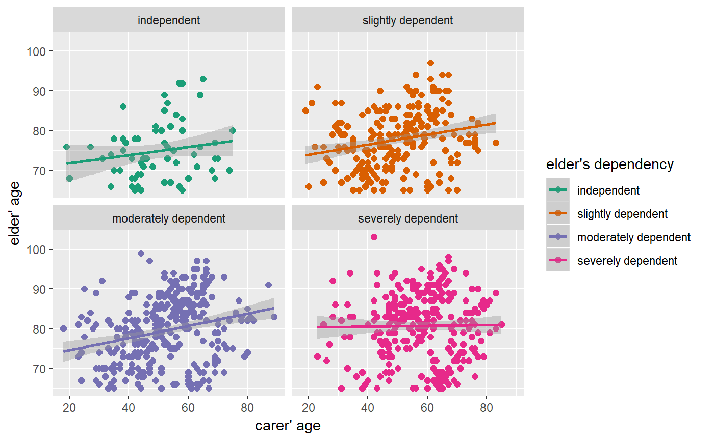
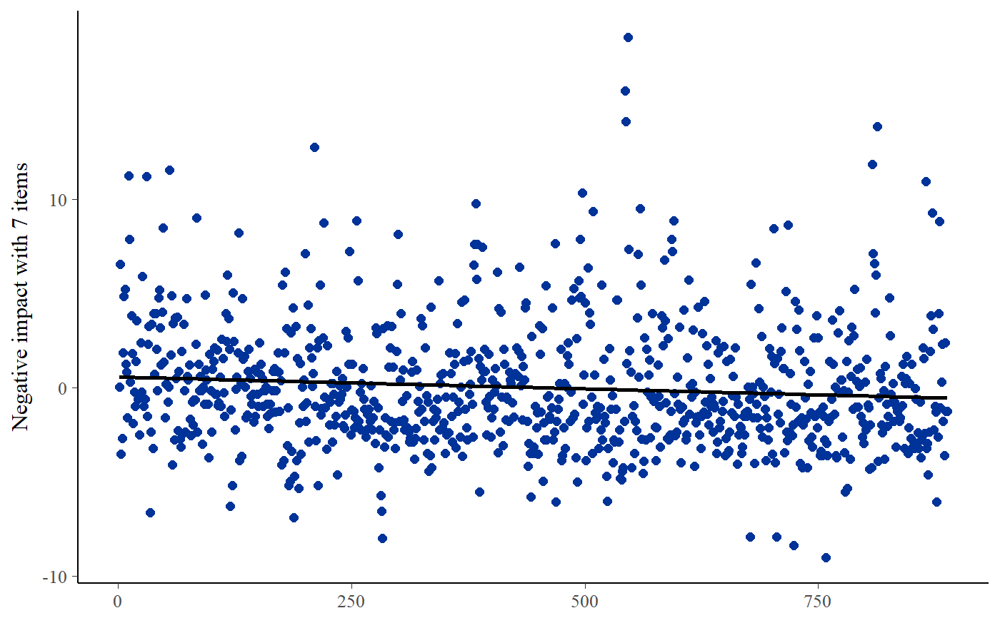
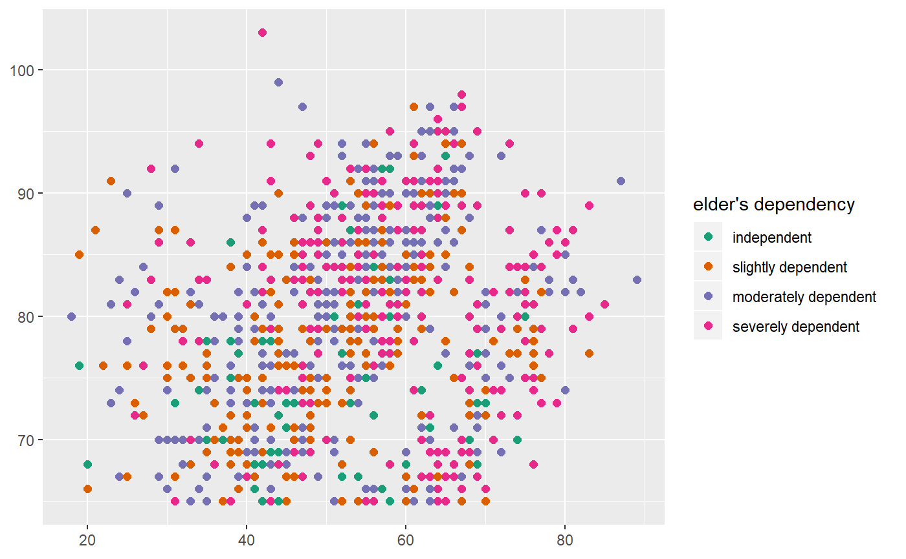
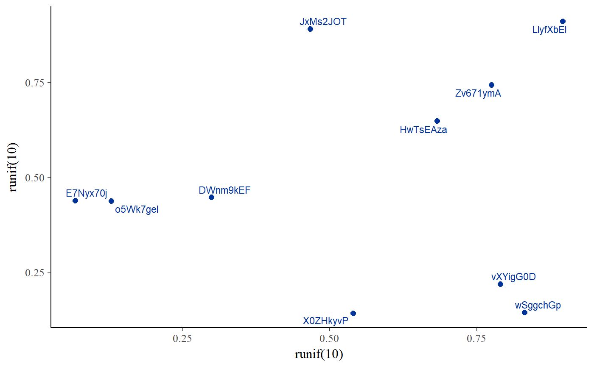

Display scatter plot of two variables. Adding a grouping variable to the scatter plot is possible. Furthermore, fitted lines can be added for each group as well as for the overall plot.
sjp.scatter(x = NULL, y = NULL, grp = NULL, title = "", legend.title = NULL, legend.labels = NULL, dot.labels = NULL, axis.titles = NULL, wrap.title = 50, wrap.legend.title = 20, wrap.legend.labels = 20, geom.size = 2, label.size = 3, geom.colors = NULL, show.axis.values = TRUE, fit.line.grps = FALSE, fit.line = FALSE, show.ci = FALSE, fitmethod = "lm", jitter.dots = FALSE, emph.dots = FALSE, auto.jitter = TRUE, jitter.ratio = 0.15, show.rug = FALSE, show.legend = TRUE, facet.grid = FALSE, prnt.plot = TRUE)
| x | Vector indicating the x positions. If not specified (i.e. if
|
|---|---|
| y | Vector indicating the y positions. If not specified (i.e. if
|
| grp | Grouping variable. If not |
| title | character vector, used as plot title. Depending on plot type and function,
will be set automatically. If |
| legend.title | character vector, used as title for the plot legend. |
| legend.labels | character vector with labels for the guide/legend. |
| dot.labels | Character vector with names for each coordinate pair given
by |
| axis.titles | character vector of length one or two, defining the title(s) for the x-axis and y-axis. |
| wrap.title | numeric, determines how many chars of the plot title are displayed in one line and when a line break is inserted. |
| wrap.legend.title | numeric, determines how many chars of the legend's title are displayed in one line and when a line break is inserted. |
| wrap.legend.labels | numeric, determines how many chars of the legend labels are displayed in one line and when a line break is inserted. |
| geom.size | size resp. width of the geoms (bar width, line thickness or point size, depending on plot type and function). Note that bar and bin widths mostly need smaller values than dot sizes. |
| label.size | Size of text labels if argument |
| geom.colors | user defined color for geoms. See 'Details' in |
| show.axis.values | logical, whether category, count or percentage values for the axis should be printed or not. |
| fit.line.grps | Logical, if |
| fit.line | Logical, if |
| show.ci | Logical, if |
| fitmethod | By default, a linear method ( |
| jitter.dots | Logical, if |
| emph.dots | Logical, if |
| auto.jitter | Logical, if |
| jitter.ratio | Ratio of tolerated overlapping (see |
| show.rug | Logical, if |
| show.legend | logical, if |
| facet.grid |
|
| prnt.plot | logical, if |
(Insisibily) returns the ggplot-object with the complete plot (plot) as well as the data frame that
was used for setting up the ggplot-object (data).
# load sample date library(sjmisc) library(sjlabelled) data(efc) # simple scatter plot, auto-jittering sjp.scatter(efc$e16sex, efc$neg_c_7)#># simple scatter plot, no jittering needed sjp.scatter(efc$c160age, efc$e17age)# grouped scatter plot sjp.scatter(efc$c160age, efc$e17age, efc$e42dep)# grouped and jittered scatter plot with marginal rug plot sjp.scatter(efc$e16sex,efc$neg_c_7, efc$c172code, show.rug = TRUE)#># grouped and labelled scatter plot, not using the auto-detection # of labels, but instead pass labels as arguments sjp.scatter(efc$c160age, efc$e17age, efc$e42dep, title = "Scatter Plot", legend.title = get_label(efc)['e42dep'], legend.labels = get_labels(efc)[['e42dep']], axis.titles = c(get_label(efc)['c160age'], get_label(efc)['e17age']), fit.line.grps = TRUE)# grouped and labelled scatter plot as facets sjp.scatter(efc$c160age,efc$e17age, efc$e42dep, fit.line.grps = TRUE, facet.grid = TRUE, show.ci = TRUE)# plot residuals of fitted models fit <- lm(neg_c_7 ~ quol_5, data = efc) sjp.scatter(y = fit$residuals, fit.line = TRUE)# "hide" axis titles sjp.scatter(efc$c160age, efc$e17age, efc$e42dep, title = "", axis.titles = c("", ""))# plot text labels pl <- c(1:10) for (i in 1:10) pl[i] <- paste(sample(c(0:9, letters, LETTERS), 8, replace = TRUE), collapse = "") sjp.scatter(runif(10), runif(10), dot.labels = pl)